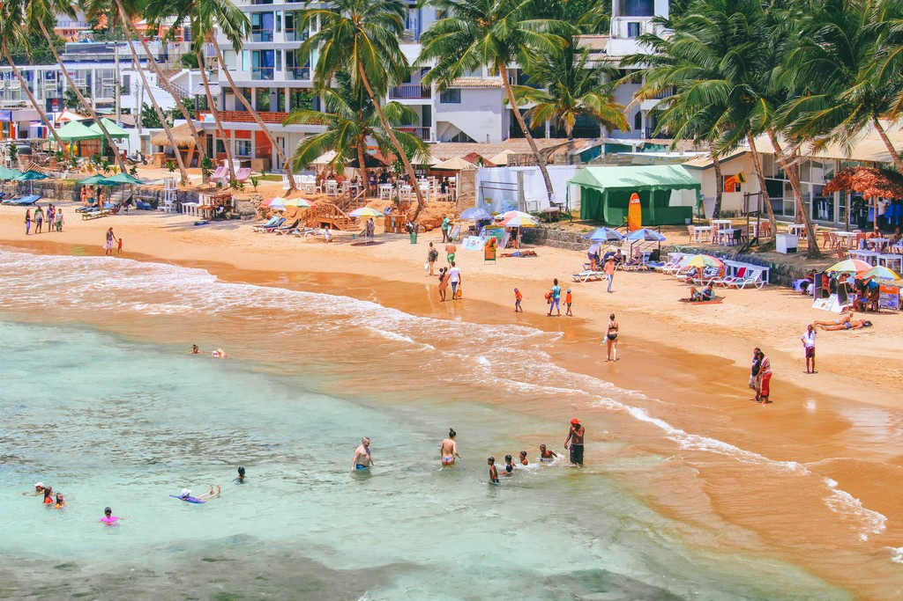

About Mirissa Beach

Mirissa beach on the south coast of Sri Lanka, located in the Matara District of the
Southern Province. It is approximately 150 kilometres south of Colombo and is situated
at an elevation of 4 metres above sea level. Mirissa's beach and nightlife make it a
popular tourist destination.
Mirissa beach is very popular among tourists. It can get pretty busy here. If you are
looking for a lesser-known beach town with fewer crowds.Mirissa is the largest fishing
port on the south coast and is known for its tuna, mullet, snapper, and butterfish.
In addition to the beach itself, Mirissa also boasts the famous Coconut Tree Hill,
which is just a 10-minute walk away, and the famosus parrot rock.Mirissa Beach is
close to the southern tip of Sri Lanka, and you will be in awe of the sunrises and
sunsets.